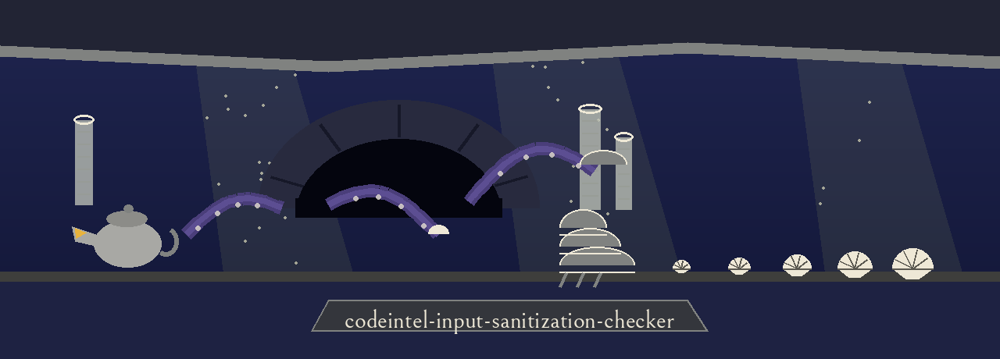

Log entry. Ground: abyss indigo. Markers: small arms. Gold is kept for results only, the way the teapot keeps its one glint.
Three Outside Tools Do the Work
The README claims the code checks for missing sanitisation, and that user input reaches queries and commands unguarded. The correction follows at once: this program does no such tracing itself. It runs three outside tools, bandit, flake8, and pylint, and gathers what they print. That is the whole mechanism.
Bandit is a security linter. Flake8 is a style and error linter. Pylint is a general linter. Only bandit speaks to sanitisation directly, and even bandit is narrowed only on request, by the offensive flag described below.
The clone line, printed verbatim:
git clone https://github.com/ShadowStrikeHQ/codeintel-input-sanitization-checkerClone Line Names the Wrong House
The address names ShadowStrikeHQ. The repo lives under ShadowGuard-AI. The line is not mended in the display.
Repository fact, marked as such: requirements.txt lists the three tools, bandit, flake8, and pylint, each at 1.0.0 or above. main.py itself uses only the standard library.
The Target Argument Is Missing
The README usage line, printed verbatim:
./codeintel-input-sanitization-checker [params]Usage Line Is a Placeholder
The parser does not accept that line. The true invocation, from main.py, is:
python3 main.py TARGET [--tools bandit flake8 pylint] [--output FILE] [--ignore PATH ...] [--offensive]Target is required and positional, and absent from the README list. Target may be a file or a directory. A missing target ends the run, exit 1.
Ignore Paths Must Exist First
Parameters in README order, with the restored target entry placed first and marked.
target (restored)The file or directory to scan. Required, positional, absent from the README list, restored here and marked.
-hShows help and exits.
--toolsREADME text: No description provided. Parser text: tools to use, default bandit flake8 pylint. Valid names are those three only; an invalid tool name ends the run, exit 1.
--outputOutput file to write results to. The short form -o exists; the README omits it.
--ignoreFiles or directories to ignore. The short form -i exists; the README omits it. Hard rule from the code: ignore paths must exist, and a missing ignore path ends the run, exit 1, before any tool starts.
--offensiveREADME text: No description provided. Parser text: enable offensive security checks, with examples SQL injection and command injection.
Offensive Means Bandit Only
In code, the flag touches bandit alone. Bandit is limited to five tests: B101, B301, B603, B605, and B608. Flake8 is unchanged by the flag. Pylint is unchanged by the flag.
Findings Are Data, a Missing Tool Is a Broken Scan
Each tool gets its own headed block. The block holds its return code, stdout, and stderr. Blocks go to the console by default, and to the output file if one is named.
A tool that could not run fails the run: missing or failed to start means exit 1. A tool that ran and found faults does not fail the run; its non zero code brings a warning only. Read the blocks. Do not read the exit code for findings.
Licence, two facts
The README closes with Copyright (c) ShadowStrikeHQ, flagged beside the clone line flag above. The LICENSE file in the repo carries the MIT License. Both are shown; neither is reconciled.
